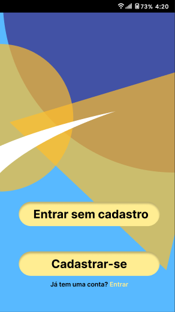
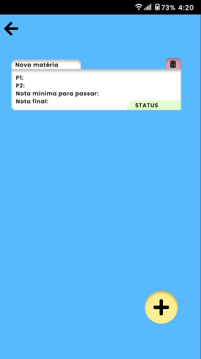
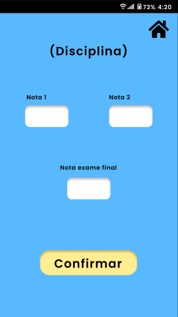

Protótipo
Introdução
O molde do projeto foi produzido através do web software "Figma", sendo este uma plataforma colaborativa para construção de design de interfaces e protótipos, onde uma equipe pode trabalhar simultaneamente e compartilhadamente em uma arquitetura de prototipagem.
Acesso ao Projeto

Confira o protótipo clicando aqui.
Screenshots
  